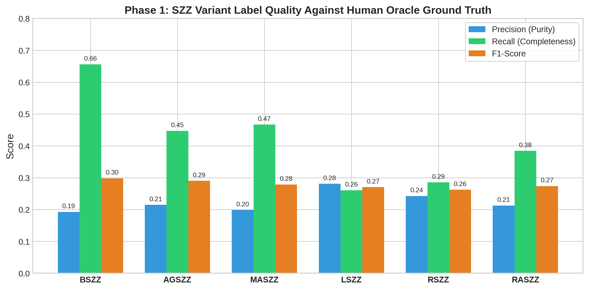
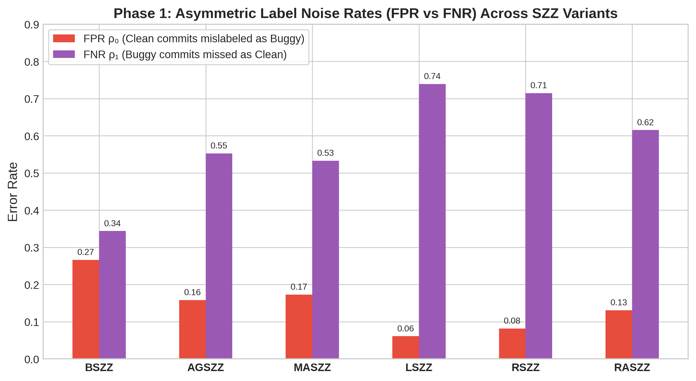
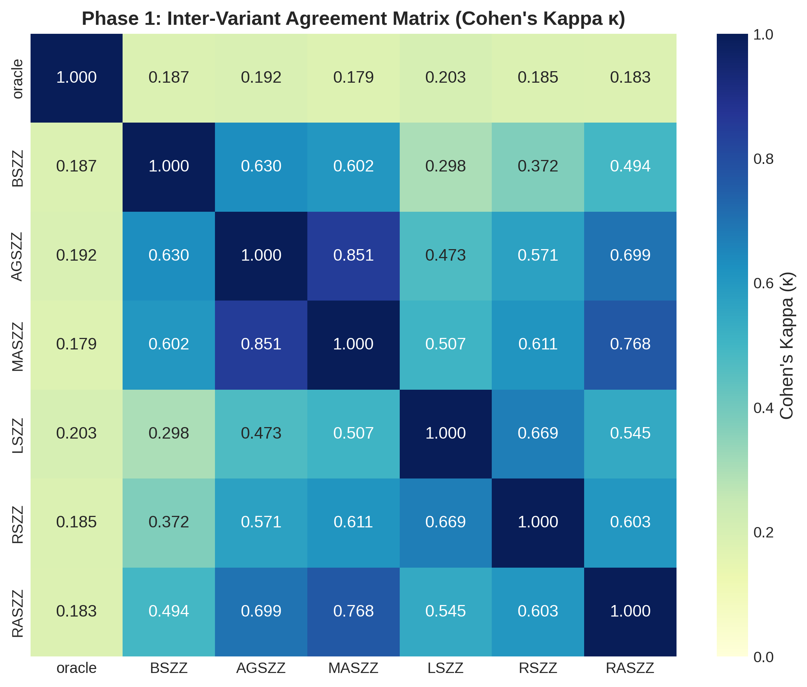
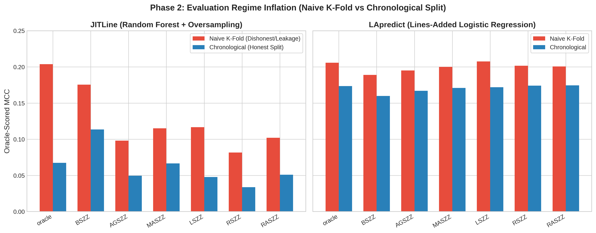
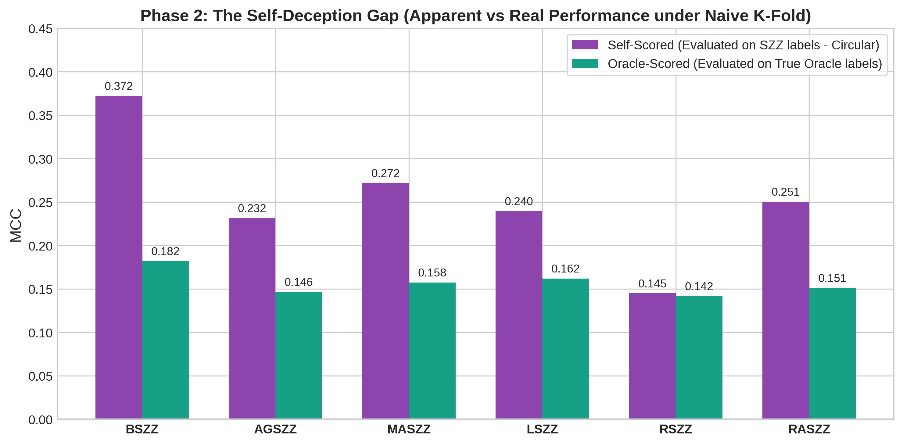
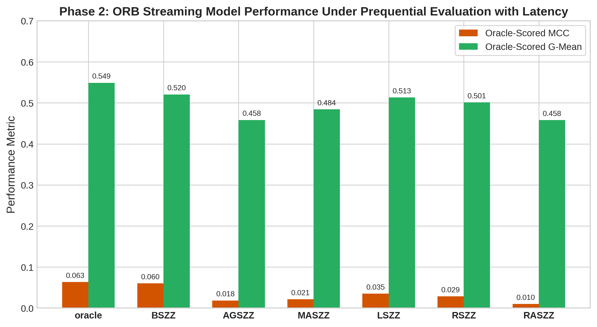
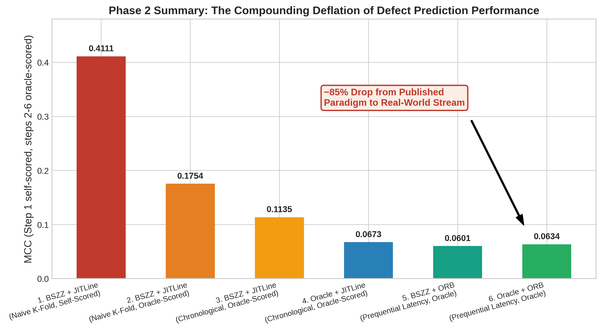

Topic: Downstream Impact of SZZ Label Noise Under Honest Evaluation Regimes
Benchmark: 21 Apache Software Projects | 14,700 Experimental Configurations | 10 Random Seeds
We evaluated 6 modern SZZ variants against human-curated ground truth across 21 Apache repositories.
| SZZ Variant | Precision | Recall | F1-Score | FPR (ρ0) | FNR (ρ1) | Cohen's κ | MCC |
|---|---|---|---|---|---|---|---|
| BSZZ | 0.1927 | 0.6561 | 0.2979 | 0.2666 | 0.3439 | 0.1867 | 0.2411 |
| AGSZZ | 0.2148 | 0.4472 | 0.2902 | 0.1585 | 0.5528 | 0.1939 | 0.2115 |
| MASZZ | 0.1986 | 0.4669 | 0.2786 | 0.1730 | 0.5331 | 0.1821 | 0.2048 |
| LSZZ | 0.2808 | 0.2607 | 0.2703 | 0.0613 | 0.7393 | 0.2061 | 0.2062 |
| RSZZ | 0.2423 | 0.2851 | 0.2620 | 0.0818 | 0.7149 | 0.1882 | 0.1889 |
| RASZZ | 0.2124 | 0.3845 | 0.2736 | 0.1309 | 0.6155 | 0.1854 | 0.1959 |



Models evaluated: LApredict (single-feature logistic regression), JITLine (100-tree Random Forest with minority oversampling), and ORB (online ensemble with 90-day verification latency).
| Model | Training Label Source | Naive K-Fold (Leaky) | Chronological Split (Honest Batch) | Prequential Latency (Realistic Stream) |
|---|---|---|---|---|
| JITLine | Oracle Ground Truth | 0.2039 | 0.0673 | N/A (Batch) |
| JITLine | BSZZ | 0.1754 | 0.1135 | N/A |
| JITLine | AGSZZ | 0.0980 | 0.0496 | N/A |
| JITLine | MASZZ | 0.1150 | 0.0666 | N/A |
| JITLine | LSZZ | 0.1167 | 0.0478 | N/A |
| JITLine | RSZZ | 0.0817 | 0.0337 | N/A |
| JITLine | RASZZ | 0.1020 | 0.0509 | N/A |
| LApredict | Oracle Ground Truth | 0.2058 | 0.1734 | N/A (Batch) |
| LApredict | BSZZ | 0.1889 | 0.1599 | N/A |
| LApredict | AGSZZ | 0.1950 | 0.1670 | N/A |
| LApredict | MASZZ | 0.2000 | 0.1708 | N/A |
| LApredict | LSZZ | 0.2074 | 0.1719 | N/A |
| LApredict | RSZZ | 0.2017 | 0.1740 | N/A |
| LApredict | RASZZ | 0.2005 | 0.1745 | N/A |
| ORB | Oracle Ground Truth | N/A (Streaming) | N/A | 0.0634 |
| ORB | BSZZ | N/A | N/A | 0.0601 |
| ORB | AGSZZ | N/A | N/A | 0.0184 |
| ORB | MASZZ | N/A | N/A | 0.0214 |
| ORB | LSZZ | N/A | N/A | 0.0351 |
| ORB | RSZZ | N/A | N/A | 0.0286 |
| ORB | RASZZ | N/A | N/A | 0.0099 |



